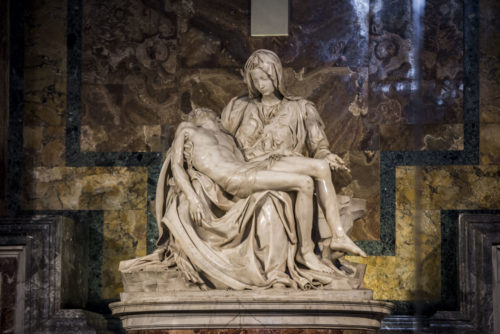
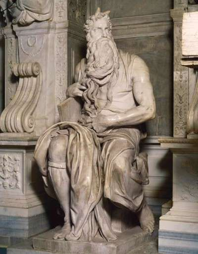

The David
The David is considered one of Michelangelo’s most famous pieces. He began sculpting in 1501 and finished in 1504. To put this into perspective, he began this piece when he was 26 years old. The David now stands in the Accademia Gallery, located in Florence, Italy. This amazing work was hand-sculpted from a single block of marble that was pulled from a quarry in Carrara, Tuscany. Michelangelo received inspiration for the sculpture from the biblical story of David and Goliath found in Book 1 of Samuel. The story goes that David defeated the Giant Goliath by surprise rather than strength. Contrary to historic renditions of the story, Michelangelo captured the moment right before David is about to confront Goliath. You can see the slingshot he holds on his shoulder and the rock in his other hand. The sculpture was originally carved for the top of Florence’s Cathedral, also known as the Duomo. This is why the hands and feet on David appear larger.
Pieta
In 1479, a cardinal named Jean de Bilheres commissioned the Michelangelo’s Pieta for the side of the chapel at the Old St. Peter’s Basilica in Rome. The sculpture portrays the story of Mary holding the deceased body of Christ after the Crucifixion, before he goes into the Tomb. This piece of work was revolutionary for its time because it was multi-figured.
Moses
After hearing about Michelangelo’s The David, Pope Julius II commissioned a tomb. It was common for great rulers to have extravagant tombstones created for them in the hopes of being remembered for years after their death. Michelangelo’s original plan for the tomb was very ambitious but was put on hold when the pope wanted Michelangelo to begin working on the Sistine chapel. The original plans for the tomb were scaled down and later placed in San Pietro in Vincoli, not St. Peter’s Basilica. Moses is the most impressive figure on the tomb. He stands eight feet high and licks big and intense. Moses is carrying the Ten Commandments under his arms. The figure of Moses was made from marble, and Michelangelo work on him from 1513-1515.
Conclude
Michelangelo was one of the most famous and succesful artists during the Italian Rennaissance. Although he painted and did many other things, Michelangelo will forever be known for his scultptures. They were revolutionary for his time and continue to be admired to this day.
Sources
- https://www.britannica.com/biography/Michelangelo
- https://www.biography.com/artist/michelangelo
- http://www.bbc.co.uk/history/historic_figures/michelangelo.shtml
- https://www.notablebiographies.com/Ma-Mo/Michelangelo.html
- http://www.italianrenaissance.org/michelangelos-pieta/
- http://www.accademia.org/
Written by Julianna Paylor